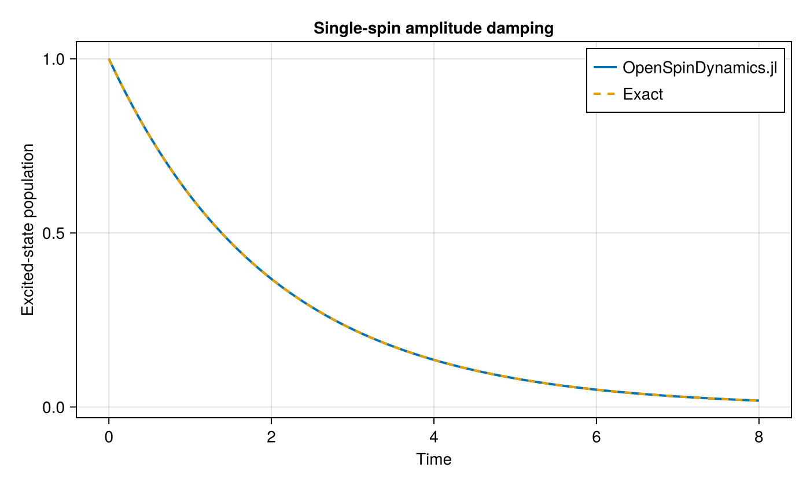

Amplitude Damping
Amplitude damping is one of the simplest open quantum-system models. It describes irreversible decay from an excited spin state to the ground state through coupling to an environment.
For a single spin with zero Hamiltonian,
\[H = 0,\]
and collapse operator
\[L = \sqrt{\gamma}\,\sigma_-,\]
the density matrix evolves according to the Lindblad master equation
\[\frac{d\rho}{dt} = -i[H,\rho] + L\rho L^\dagger - \frac{1}{2} \left\{ L^\dagger L,\rho \right\}.\]
Starting from the excited state, the excited-state population decays exponentially,
\[P_{\uparrow}(t) = e^{-\gamma t}.\]
This provides a simple analytic benchmark for the open-system evolution implemented in OpenSpinDynamics.jl.
Model
We construct a single-spin model with a vanishing Hamiltonian and use $spin_operators$ to obtain the lowering operator.
using OpenSpinDynamics
using SparseArrays
using LinearAlgebra
using CairoMakie
γ = 0.5
N = 1
model = SpinModel(
N;
Jxy=0.0,
Jz=0.0,
)
ops = spin_operators(N)The initial state is chosen to be the spin-up state along the $z$ direction.
ψ0 = polarized_state(
N;
direction=:z,
)
ρ0 = sparse(ψ0 * ψ0')The amplitude-damping collapse operator is
\[L = \sqrt{\gamma}\,\sigma_-.\]
lindblad_ops = [
sqrt(γ) * ops.minus[1],
]To measure the excited-state population, we use the projector
\[P_\uparrow = \frac{I+\sigma_z}{2}.\]
I2 = sparse(Matrix{Float64}(I, 2, 2))
Pup = 0.5 .* (
I2 + ops.z[1]
)
times = collect(
range(0.0, 8.0; length=200)
)Lindblad evolution
The density matrix can now be evolved directly from the SpinModel.
population = evolve(
model,
ρ0,
times,
[Pup];
method=:expm,
lindblad_ops=lindblad_ops,
)For this model, the exact solution is
\[P_{\uparrow}(t) = e^{-\gamma t}.\]
exact = exp.(-γ .* times)
max_error = maximum(
abs.(population[:, 1] .- exact)
)
max_error3.3306690738754696e-16The numerical result should agree with the analytic solution up to numerical precision.
Numerical result
fig = Figure(size=(700, 420))
ax = Axis(
fig[1, 1];
xlabel="Time",
ylabel="Excited-state population",
title="Single-spin amplitude damping",
)
lines!(
ax,
times,
population[:, 1];
label="OpenSpinDynamics.jl",
linewidth=2,
)
lines!(
ax,
times,
exact;
label="Exact",
linestyle=:dash,
linewidth=2,
)
axislegend(ax)
fig
The excited-state population decays exponentially from one to zero. The numerical Lindblad evolution follows the exact result
\[P_{\uparrow}(t)=e^{-\gamma t},\]
demonstrating the expected dissipative dynamics of a single spin undergoing amplitude damping.